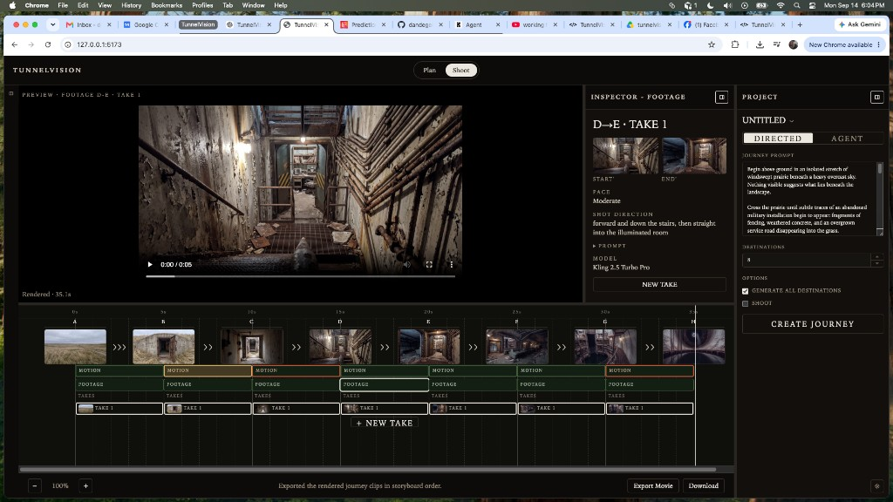
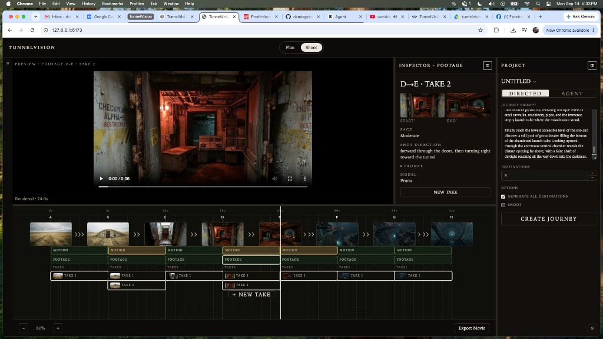

This chapter records Takes as first-class footage. Generating another traversal no longer overwrites the previous clip. Each segment A→B keeps 0..N Takes. The filmmaker selects which Take is in the current cut. FOOTAGE, preview, playback, and Export Movie use that selected Take. Camotion Phase 1 remains frozen. Director, CM, and generation prompting are unchanged.
NEW TAKE appends. Canonical RESHOOT is a different operation.
The user-facing generate action is NEW TAKE. Artifacts are TAKE 1, TAKE 2, TAKE 3. Destination Reshoot still means regenerate a set/canonical, not another performance of the same valid segment. Existing footage loads as Take 1. A segment with no clip has zero Takes. Newest Take is selected after generate. Later JourneyAgent retries must append Takes the same way.

Shoot — Live untitled journey. D→E FOOTAGE selected. Inspector identity is D→E · TAKE 1. + NEW TAKE sits under the TAKES stack for the selected segment.

Same journey after another generate. D→E has TAKE 1 and TAKE 2. TAKE 2 is selected; preview and inspector follow that Take. Earlier Takes stay.
Timeline
MOTION · FOOTAGE · TAKES
Each interval stacks MOTION, FOOTAGE (the selected Take), then TAKES. Take rows stack vertically. The timeline already resizes and scrolls for that. Clicking a Take selects it and updates FOOTAGE, preview, and export. The selected Take uses an inset ring so the outline is not clipped by the next row.
Shoot workspace / tab terminology stays SHOOT. Footage-generation buttons that used to read SHOOT / RESHOOT now read NEW TAKE. Destination Shoot / Reshoot is unchanged.
Domain
PAIR STAMP · NOT REVISION UI
Takes live on the JourneyShot, not as timeline-only UI state. Each new Take records the start and end canonical media IDs it was shot against. Compatibility is that stamped pair, not the segment letters. A selected A→B Take and selected B→C Take will later have to share the same B revision at the handoff.
This slice does not implement canonical revision UI, alternate-continuity pickers, Footage Evaluator, Agent take selection, or automatic retry. Current destination Reshoot still replaces the letter in place. Non-destructive B1 / B2 continuity is backlog.
Happy path: fixed canonicals, multiple Takes per segment.
Slice 8 remains the current product overview. Slice 10 remains the Construct spatial-progression prompt. This chapter is the Takes workstation: non-destructive footage generation, filmmaker selection of the current cut, and a media-id stamp so a later RESHOOT of B can keep B1 Takes instead of destroying them.